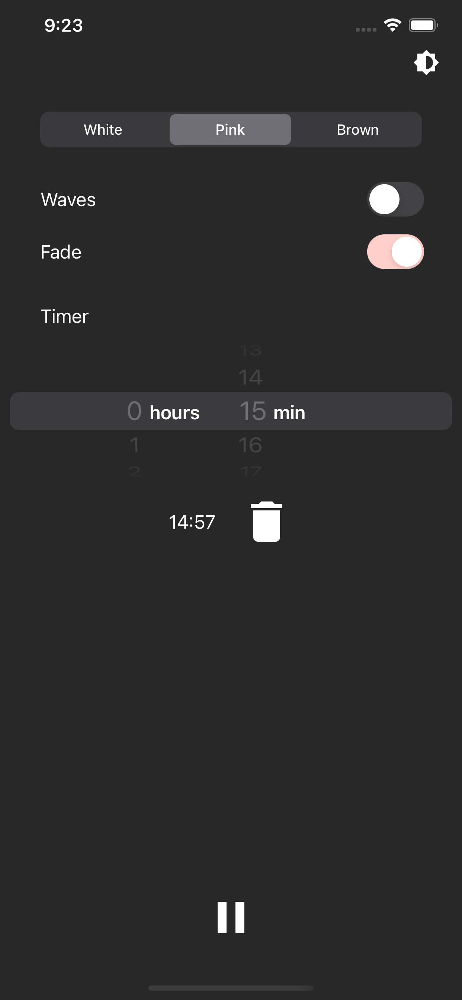
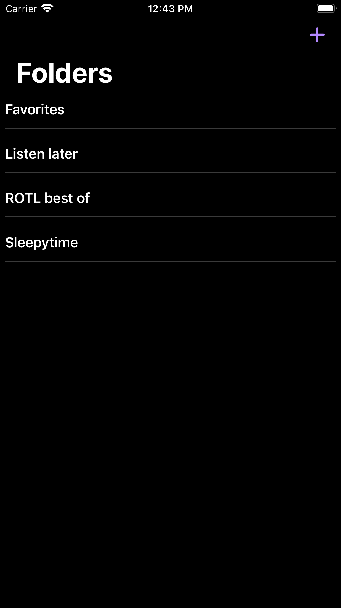
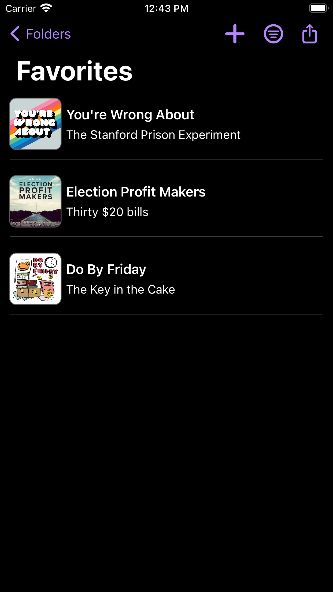
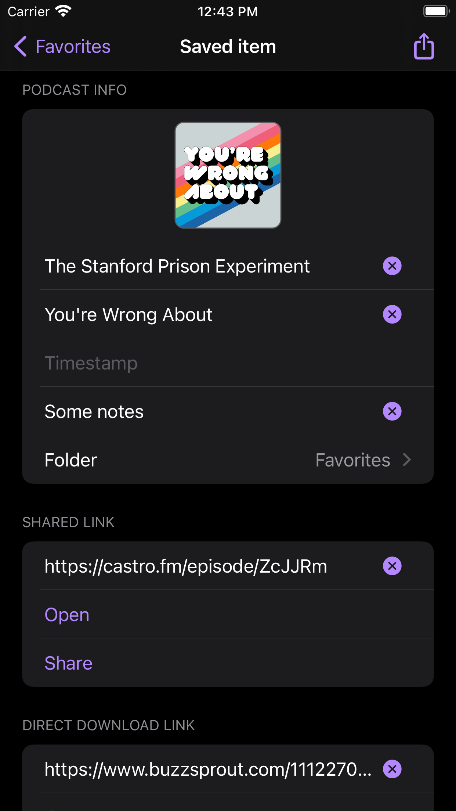
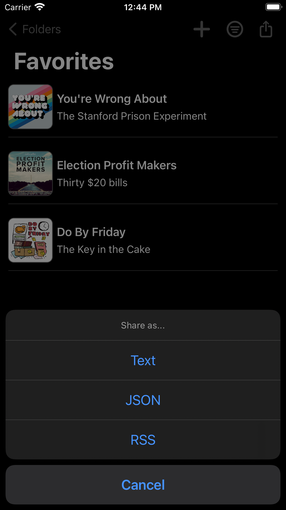

# David Albers
<sub>[PDF version](./resume.pdf) | [Other stuff](./notes/index.html)<sub>
---
#### Currently
**Android Developer** Expedia<br>
Since January 2018 in Chicago, IL
* Added new features to Expedia's Android app, primarily in Kotlin
* Used Jetpack Compose to build a framework of reusable UI components
* Integrated a new GraphQL API using Apollo Android
* migrated lodging LOB from REST to GraphQL
* built new features across lodging, homescreen, and trip LOBs using GraphQL
* Helped bring Expedia's design system to Android
* Wrote design system tokens and code for system's Android library
* Built custom `Views` adhering to the system
* Combined above design system & API in server-driven UI aiming for flexible UI that removes client logic
* Wrote blog posts and gave presentations to other devs about design system and GraphQL on Android
* Wrote integration tests using Robolectric, helped convert existing code to MVVM
#### Previously
**Android Developer** First Orion<br>
From November 2016 to December 2017 in Little Rock, AR
* Handled push messages from both Google Cloud Messaging (GCM) and Firebase
* Utilized Realm for efficiently storing and reading large amounts of data
* Wrote UI and unit tests in Espresso, Mockito, Calabash, & Appium
* Used continous integration (Jenkins) to automate builds and unit testing
* Generated code coverage reports with Jacoco and Sonarqube from Jenkins
**Software Engineer** CymSTAR<br>
from January to May 2016 in Tulsa, OK
* Modified A-10 Simulator for added functionality and bug fixes
* Debugged and solved issues caused by upgrading real-time OS (VxWorks) on simulator
* Implemented additional constraints for scheduling genetic algorithm in C
**Software Intern** InvoTek<br>
from August 2011 to January 2016 in Alma, AR
* Created accessible user interfaces by providing alternative access methods such as eye-tracking
* Implemented Bluetooth communication in apps and developed custom Views in Android
* Installed products for clients and demonstrated how to use products
---
#### Projects
##### White Noise Plus for Android & iOS
* White noise app focused on useful, simple features
* Available on [Play Store](https://play.google.com/store/apps/details?id=dalbers.com.noise "App Link") and [App Store](https://apps.apple.com/us/app/white-noise-plus/id1281372285)

<img src="./notes/whitenoise2.png" width="150">
##### Podmark for iOS
* "Bookmark" podcasts
* Available on [App Store](https://apps.apple.com/us/app/podmark/id1546743310)




---
#### Education
Bachelor of Science in Computer Science from the University of Tulsa
<br>Graduated May 2016, GPA: 3.9
---
All projects are on [GitHub](https://www.github.com/davidalbers).<br>
Contact me on [LinkedIn](https://www.linkedin.com/in/davidgalbers).